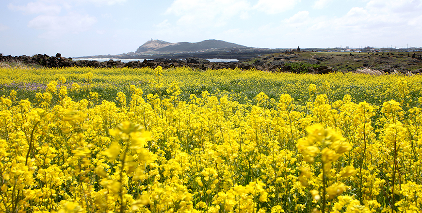

기획취재콘텐츠
- Home
- 제주라이프
- 기획취재콘텐츠
제주 화장품 원료 산업 1부새로운 글


유네스코가 지정한 청정 섬 제주에는 9,000여 종의 생물이 생육하고 있는 것으로 알려져 있다. 화산 분출로 생성된 대지에 피어오른 생명은, 제주의 아름다운 자연의 일부이자 미래 전략 산업의 핵심 자원으로 주목받고 있다. 국제적으로 위상을 떨치고 있는 한국 화장품 산업의 근간이 될 산업, 제주의 화장품 원료 산업이다.

K-뷰티의 성장과 함께 떠오른 새로운 과제
한국 화장품 산업은 뛰어난 기술력, 탄탄한 제조업 생태계를 바탕으로 한류열풍과 함께 우뚝 선 K-뷰티 브랜드를 강점으로 독보적인 인기와 규모를 자랑한다. 한국 콜마, 코스맥스 등 글로벌 화장품 ODM, OEM 세계 1,2위 제조기업을 보유하며, 고품질의 제품 개발로 전 세계 시장의 소비자를 유혹한다. 미국 패션잡지 WWD가 선정한 100대 화장품 기업 중 한국 화장품 시장을 주도하는 대기업인 아모레퍼시픽(12위)와 LG생활건강(17위)가 순위권에 진입했으며, 중견 기업인 에이블씨엔씨와 해브앤비도 각각 68위와 71위로 진입에 성공했다. 여기에 미샤, 더페이스샵 등 로드샵 브랜드의 글로벌 시장 진출을 확대하며 틈새시장에서 글로벌 소비자 취향을 사로잡고 있다. 지난 20년 간 국내 화장품 시장 규모는 연 평균 10%대의 성장세를 유지하며 2017년 기준 세계 시장 8위 규모의 화장품 문화 대국으로

※ 출처 : KOTRA 자체종합(KOTRA, 보건복지부, 식품의약품안전처), 한국보건산업진흥원, Global Trade Atlas(2018. 06)
한국화장품산업 시장은 지난 10년 간 계속 성장세를 유지하고 있다.
국내 시장 규모의 성장과 함께 글로벌 수출 실적도 매년 기록을 갱신하고 있다. 한국보건산업진흥원에서 발표한 2019 화장품 산업 분석 보고서에 따르면 2018년 화장품 수출 실적은 62억 7,678만 달러로 전년 대비 26.5% 증가했으며, 2004년 2억 1901만 달러와 비교하면 14년 간 30배 가까이 성장했다. 수출 국가도 다양해졌다. K-뷰티의 품질과 인지도 향상으로 기존 중화권 중심의 수출에서 미주, 유럽 등 선진 시장으로 화장품 수출이 지속적으로 증가한 것. 한국 화장품 산업은 2013년 첫 수출흑자 전환 후 연 평균 40%대 성장률을 기록하며 반도체, 자동차 등 대표적 수출 품목과 함께 2017년 한국의 세계 시장 혁신 선도 9개 분야에 선정되기도 했다.
한국 화장품 산업 규모의 성장과 함께 화장품 원료 산업의 성장에 관심이 쏠렸다. 한국 화장품 원료는 아직까지 해외에서 수입한 원료가 대부분이다. 이에 화장품 업계는 화장품 원료의 자립화라는 숙제를 안게 됐다. 화장품을 구매하는 소비자도 더욱 똑똑해졌다. 브랜드 이미지로 제품을 선택했던 과거와 다르게 화장품에 포함된 원료 하나하나를 꼼꼼히 따져보고 제품을 선택하기 시작한 것이다. 천연 원료가 함유된 화장품이 인기를 끌며 화장품 원료 선진화는 피할 수 없는 흐름이 되었다. 여기에 고령화와 대기 오염(환경 오염)은 원료를 중시하는 기능성 화장품 시장의 확대로 이어졌다.
제주 자연에 뿌리내린 생물종, 화장품 원료로 우수성 입증
제주산 화장품 원료가 처음 주목받기 시작한 것은 2008년, 아모레퍼시픽의 화장품 브랜드 이니스프리에서 서광다원 녹차 추출물로 만든 제주 녹차 그린티 라인을 발표하면서다. 기능적으로도 우수한 자연 원료인 녹차와 청정 제주의 이미지를 활용한 브랜드 스토리텔링을 접목하며 제주 녹차 그린티 라인은 큰 인기를 얻었다. 이후 이니스프리에서 출시한 제주 화산송이, 그린티 씨드, 동백, 유채꿀 등 제주 자연 원료를 활용한 화장품 라인이 연이어 성공하며, 제주의 다양한 생물 원료에 대한 관심은 더욱 높아졌다.
제주의 지리적 특성은 화장품 원료 산업 거점으로 훌륭한 환경을 제공한다. 화산섬이라는 특수한 대지에 육상식물 2,000여 종, 사면을 둘러싼 바다에 해양식물 700여 종이 자생한다. 이는 우리나라에서 자생하는 전체 식물 종의 50%에 가까운 종이 분포하는 것으로 면적에 비해 다양한 생물 종을 채취하고 연구할 수 있어 생물자원을 활용한 사업 활성화에 최적이다. 또한, 화산 분출로 생성된 화산섬 제주에는 60여 종의 제주 고유 특산종이 보고된다.
- 제주는 육상과 바다에 이르기까지 다양한 생물자원이 있어 화장품 원료 산업에 최적지로 손꼽힌다. -
2019년 기준 제주테크노파크 생물종다양성연구소에 등록된 제주 화장품 원료는 321종이다. 이 중 국제화장품원료집(International Cosmetic Ingredient Dictionary, 이하 ICID)에 등재된 원료는 전체 원료 중 85%에 달하는 270여 종이다. 특히, 제주산 화장품 원료의 원료명에는 ‘제주 Jeju’ 영문이 함께 붙어 등재되어 있는데, 전국에서 지역 이름으로 ICID에 원료가 등재된 곳은 제주가 유일하다. 제주산 원료의 우수성과 특수성이 인정받은 결과다. 제주산 화장품 원료에는 동백, 감귤, 녹차, 유채 등 익숙한 청정 제주의 특산물부터 구찌뽕나무, 애기달맞이 등 생소한 명칭의 식물 추출물까지 그 종류도 다양하다.
- 제주동백나무, 제주유채꽃, 제주녹차나무, 제주감귤나무 -
다양한 생물 자원 추출물 외에도 제주에는 화장품 품질에 큰 영향을 주는 화장품 원료가 있다. 바로 화장품의 베이스 재료인 물이다. 50여 만년전 형성된 지하 420m 화산 암반에 부존하는 지하수는 자연이 만든 촘촘한 필터로 여과된 청정수다. 겹겹이 쌓인 퇴적층과 용암층으로 여과된 지하수는 여과 과정에서 불순물은 걸러지고 약 알칼리성으로 건강에 좋은 비나듐, 실라카 등의 미네라를 함유한다. 또한, 화산암반수 아래 보존된 지하수는 오염원이 침투하기 어려운 환경으로 청정함을 꾸준히 유지한다. 또 다른 물인 용암해수는 화산암반층에 바닷물이 자연 여과되어 육지의 지하로 스며든 물이다. 미네랄과 영양염류가 매우 풍부하며 유기물 및 병원균이 거의 없는 제주만이 보유한 독특한 지하수자원으로 기능성 음료와 화장품에 활용되어 부가가치를 높이고 있다.
다음글